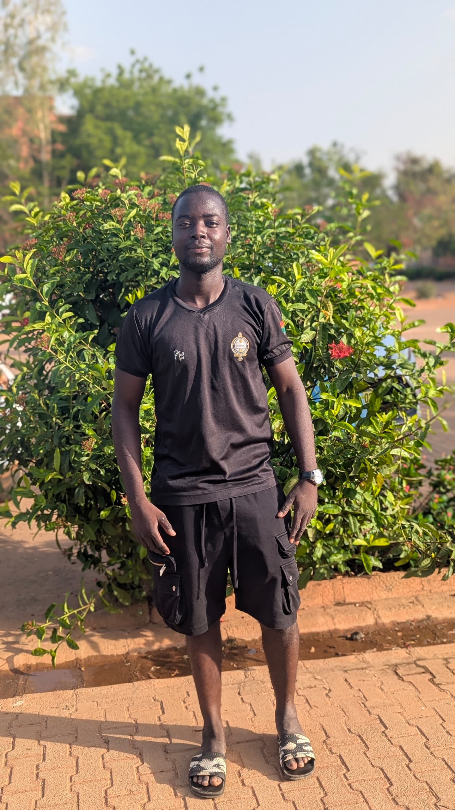

À propos
Je m'appelle Ouali, passionné par la création de sites web modernes et interactifs.
Je suis actuellement étudiant en développement web, et je cherche à améliorer mes compétences en JavaScript, HTML et CSS.
J’adore transformer mes idées en projets concrets et expérimenter avec les nouvelles technologies.
Télécharger mon CV
